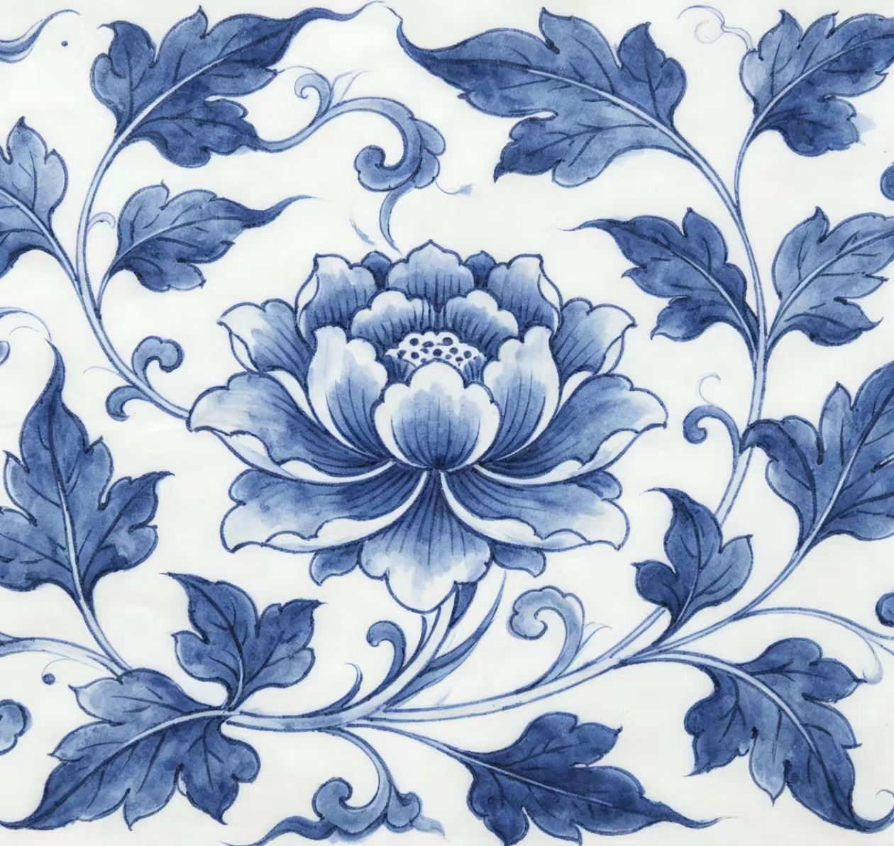
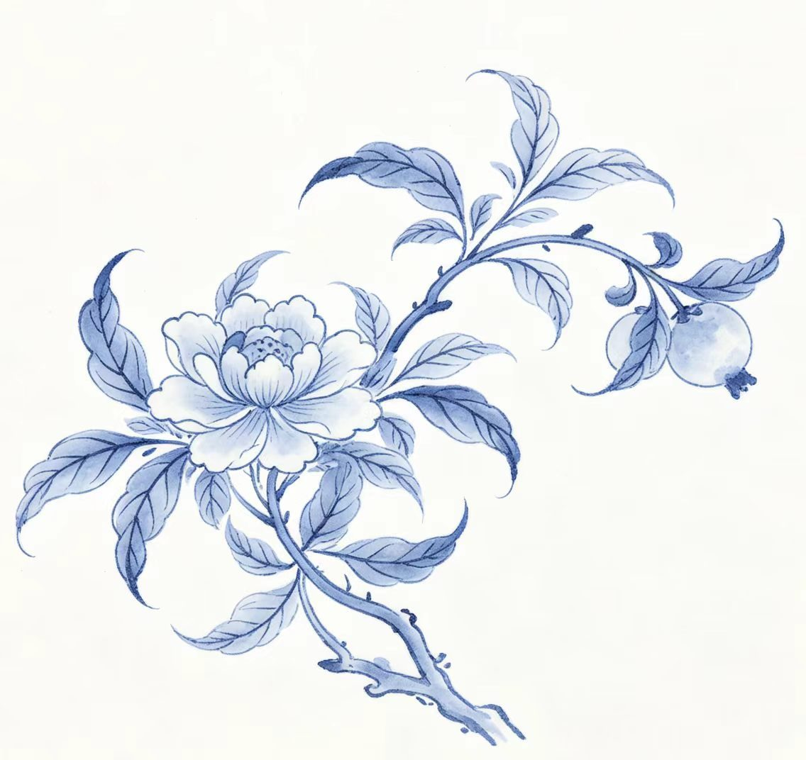
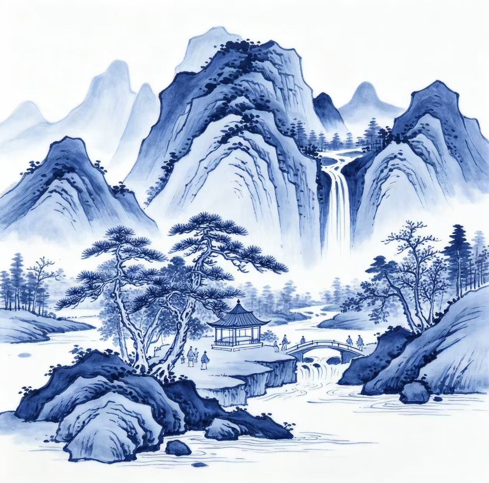

一团泥，八道工序，一窑火。
往下滚，它会成为一只瓶。
轮盘上现在放着 3.2 kg 二元配方的泥
钴沉在釉下面，隔着一层约零点八毫米的玻璃质。它刚画上去时是黑褐色，是这一窑的火把它叫成蓝。
附记NOTES
页面里的师父、编号和这一窑的成败都不存在。八道工序的顺序、泥料的配方、钴料的来路，以及火里那二十四小时，是真的。



元代起，景德镇的坯不再只用瓷石，掺进高岭土。铝多了，坯在一千三百度才不塌——元青花那种厚重饱满的形，是配方给的。
元与明初用苏麻离青，低锰高铁，浓处结出铁锈斑，泛一层锡光，还带着晕散。后来是平等青、回青、珠明料。同一笔画，换个矿就是另一个蓝。
头浓、二浓、正淡浓、正淡、影淡。鸡头笔点水，料随水走。一片叶子从浓到淡，是水在走，不是笔在画。
蛋形窑，松柴，还原焰。看火靠火照子：钩出一小片瓷，看它软到什么程度。定夺的人叫把桩师傅——温度不是数字，是经验。
青花的一千年
扬州出土的唐青花残片，钴已经画在釉下，只是那时的蓝还很浅。
至正型青花：二元配方、苏麻离青，器大、形厚、纹满。
官窑青花最浓艳的一段，晕散与铁锈斑都成了标准。
一只瓶上能分出五个层次的蓝，青花从此像水墨。
这个页面需要支持 WebGL 的浏览器才能看到器物成形。
换用桌面版 Chrome、Edge 或 Safari 再打开一次。